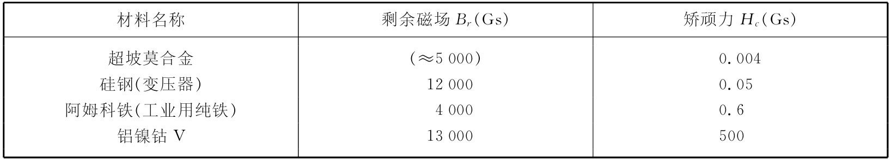

现在我们很想来谈谈在技术领域中用到的各种磁性材料，并讨论为不同目的而设计磁性材料时所涉及的某些问题。首先，“铁的磁性”这个人们经常听到的名词是一种误称——并没有这么回事。“铁”不是一种完全确定的材料——铁的性质严格地取决于所含杂质的份量和该块铁是怎样 制成的。你可以体会到，磁性将依赖于畴壁移动的难易程度，以及那是一种整体 的性质而不是个别原子的特性。所以凡实用的铁磁性实际上并非一个铁原子 的一种特性——它是处于某一形态上的固体铁 的性质。例如，铁可取两种不同的结晶形式。普通形式具有体心立方晶格，但它也可有面心立方晶格，不过后者只在超过1100℃的温度时才会稳定。当然，在该温度时体心立方的结构早已越过其居里点了。可是，通过把铬和镍加入铁中形成合金（一种可能的混合物，其中含有18%的铬和8%的镍），我们能够获得所谓的不锈钢，这虽然主要含的是铁，但即使在低温时也仍保留其面心晶格。由于它的晶体结构不同，它便具有完全不同的磁性。大多数品种的不锈钢并不带有可观程度的磁性，尽管有某些品种稍微带点磁性——这取决于该合金的成分。即使这样一种合金有磁性，它仍不是像普通铁那样的铁磁性 ——尽管该合金所含的成分大多数是铁。
现在我们很想来描述几种为某些特定磁性而研制起来的特种材料。首先，如果想制成一块永 磁体，想要具有宽 磁滞回线的那种材料，使得当撤去电流而把起磁场降低至零时，磁化强度仍会保持强大。对于这样的材料，磁畴边界应该尽可能“冻结”在原地。这种材料中的一种就是“铝镍钴V”（含有51%铁，8%铝，14%镍，24%钴，3%铜）。（这种合金相当复杂的成分标志着要制成优质磁铁所必须经历过的详尽的努力。要把五种东西混合起来，并一直试验到求得最理想的物质，需要多少耐性啊！）当铝镍钴凝固时，就有一种“第二相”淀积出来，造成许多微小晶粒和很高的内应变。在这种材料中，畴壁边界根本难于移动。除了应具备准确的成分外，铝镍钴是这样机械“加工”的，即使晶体具有长晶粒结构，而且晶粒沿着将要磁化的方向。这样，磁化就有在这些方向上被排列起来的一种自然趋势，而凭这种各向异性效应磁化就会被保持在那里了。而且，材料在制造时甚至被置在外加磁场中冷却，以致晶粒将按正确的结晶方向生长。铝镍钴V的磁滞回线如图37-12所示。你看它比上一章图36-8中关于软铁的磁滞回线要宽约700倍。
图37-12 铝镍钴V的磁滞回线
现在让我们转到另一种不同的材料上来。为了制造变压器和电动机，需要一种“软”磁材料——它的磁性很容易改变，以致由一个十分微小的外加磁场就造成大量的磁化。为做到这点，我们需要一些纯净的而又退火退得很好的材料，其中将含有很少的位错和杂质，使得畴壁能够容易移动。要是我们能制成小的各向异性，那也会是很好的。这时，即使材料中的晶粒有相对于场处在不恰当的角度，但它也仍然容易被磁化。原来我们已经说过，铁比较喜欢沿［100］方向磁化，而镍则倾向于［111］方向，因此如果我们把铁和镍以各种不同的比例混合，也许有希望用刚好恰当的比例找到一种不会偏爱任何 方向的合金——［100］和［111］两个方向可能彼此等价。事实证明，这发生于混合物中含有70%镍和30%铁的情况。此外——也许由于幸运，或可能由于在各向异性与磁致伸缩效应之间存在某种物理关系——结果是，铁与镍的磁致伸缩 具有相反的符号。而在这两种金属的合金中，当含有约80%的镍时，这一性质就会通过零值。因此，镍含量在70%～80%之间时，我们将获得一种非常“软”的磁性材料——极易于磁化的合金，它们被叫做坡莫合金 。这种坡莫合金用于优质（在低信号水平的）变压器中，但对于永磁则毫无用处。坡莫合金一定要很小心地制造和使用。一块坡莫合金若所受的应力超过弹性限度，性质将激烈发生变化，即不能把它弯曲。如果把它弯曲，其磁导率将由于机械形变所产生的位错、滑移带等等而降低，畴壁不再容易移动了。然而，这高磁导率可以通过在高温中退火而恢复。
用某些数字来表征各种不同磁性材料往往很方便。有两个有用的数字，那就是磁滞回线与B轴和H轴的截距，如图37-12所标明出来的那样。这些截距分别称为剩余磁场 Br 和矫顽力 Hc ，在表37-1中我们把几种磁性材料的这些数字列举了出来。
表37-1 某些铁磁材料的性质
